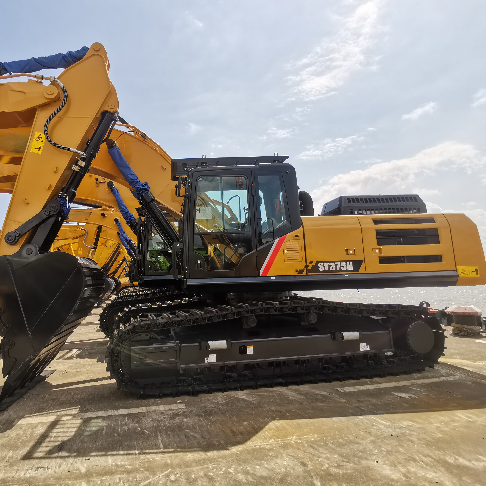

Refurbished SANY SY375 Excavator
The SANY SY375 Excavator is a powerful and versatile machine designed for heavy-duty tasks in large-scale construction, mining, and infrastructure projects. Known for its exceptional performance, fuel efficiency, and durable design, the SY375 is a trusted choice for tackling demanding excavation, trenching, material handling, and demolition tasks.
Honestly, it's almost impossible to buy a brand new excavator from China. They either don't exist or are made in China. If a Chinese seller tells you their Caterpillar/Komatsu/Volvo/Kobelco/Hitachi is brand new, they're lying. Therefore, a refurbished excavator is your best bet.

Here are the detailed specifications for a refurbished SANY SY375H excavator:
Operating Weight and Dimensions
- Operating Weight: ~36,000–38,000 kg
- Transport Length: ~11.2 meters
- Transport Width: ~3.4 meters
- Transport Height: ~3.5 meters
- Tail Swing Radius: ~3.8 meters
- Track Width: ~600–800 mm standard
- Undercarriage: Heavy-duty LC configuration with reinforced frame
Engine and Powertrain
- Engine Model: Isuzu 6HK1X or SANY-customized Cummins QSL9
- Rated Power Output: ~212–235 kW (285–315 hp) @ 2,000 rpm
- Displacement: ~9.0 liters
- Fuel Tank Capacity: ~600 liters
- Travel Speed: ~5.0 km/h
- Swing Speed: ~9.0 rpm
- Emission Control: Tier 3 or Stage IIIA (refurbished units often pre-DEF)
Hydraulic System
- Main Pump Type: Electronically controlled axial piston pumps
- Pump Flow Rate: ~2 × 280–300 L/min
- System Pressure: Up to 34.3 MPa
- Hydraulic Oil Capacity: ~500 liters
- Efficiency Features:
- Load-sensing flow distribution
- Regeneration circuits
- Oversized valve cores for reduced pressure loss
- Energy-saving control valves
Performance Metrics
- Bucket Capacity:
- Standard: 1.8–2.2 m³
- Optional: 2.5 m³ heavy-duty bucket
- Max Digging Depth: ~7.5 meters
- Max Reach (Horizontal): ~11.5–12.0 meters
- Max Dump Height: ~7.2–7.5 meters
- Bucket Digging Force: ~230–250 kN
- Arm Digging Force: ~180–200 kN
Cab and Operator Features
- Cab Type: ROPS/FOPS-certified with reinforced structure
- Display: Intelligent LCD monitor with diagnostics and fuel tracking
- Controls: Pilot-operated joysticks with auxiliary hydraulic circuit
- Comfort: Air-suspension seat, HVAC, noise insulation
- Visibility: Wide glass area, LED work lights, optional 360° camera system
Attachments Compatibility
- Standard Bucket: 2.2 m³
- Optional Tools: Rock breaker, demolition shear, ripper, compactor
- Quick Coupler: Heavy-duty hydraulic coupler
- Bucket Series: Configurable for granite, gravel, and mining conditions
Refurbishment Scope
Refurbished SY375 units typically include:
- Engine Overhaul: Turbocharger, injectors, cooling system
- Hydraulic Restoration: Pump recalibration, valve block testing, hose replacement
- Electrical Diagnostics: Monitor, sensors, wiring harness
- Cab Reconditioning: Seat, joysticks, HVAC, repainting
- Structural Repairs: Boom/bucket welding, bushing replacement, undercarriage rebuild
Overview of the SANY SY375 Excavator
The SANY SY375 is a large hydraulic crawler excavator designed to perform under the most challenging conditions. Its powerful engine, advanced hydraulics, and efficient fuel system make it an excellent choice for heavy-duty projects where high productivity and efficiency are required. The SY375 is capable of handling tasks like deep excavation, large-scale material lifting, and demolition work, all while offering precision and fuel efficiency.
Refurbished models are fully reconditioned to like-new standards, ensuring reliability and performance while significantly reducing the cost compared to new units. This makes it a smart investment for businesses and contractors who require high-performance equipment without breaking the bank.
Key Specifications of the SANY SY375 Excavator
The SANY SY375 Excavator is built for high-efficiency operation in a range of heavy-duty applications. Below are the key specifications that make the SY375 a powerful choice for large-scale projects:
-
Operating Weight: Approximately 37,500 kg (82,674 lbs)
-
Engine Power: 276 hp (206 kW)
-
Max Digging Depth: Up to 7.5 meters (24.6 feet)
-
Maximum Reach: 11.3 meters (37.1 feet)
-
Bucket Capacity: Typically 1.6 - 2.0 cubic meters (56.5 - 70.6 cubic feet)
-
Fuel Tank Capacity: Around 450 liters (119 gallons)
-
Travel Speed: Up to 5.5 km/h (3.4 mph)
These specifications give the SY375 the strength and versatility to handle large excavation, lifting, and material handling tasks while maintaining high productivity levels.
Performance and Efficiency of the SY375
The SANY SY375 is designed to provide exceptional performance while optimizing fuel consumption. Its powerful engine and advanced hydraulic system ensure smooth operation and fast cycle times, which are essential for maximizing productivity in large-scale projects.
Performance Highlights:
-
Powerful Hydraulic System: The SY375 is equipped with an advanced hydraulic system that ensures precise control and smooth operation. This system improves the overall efficiency of the machine, allowing for faster cycle times and superior lifting capabilities in demanding conditions.
-
Fuel Efficiency: One of the key advantages of the SY375 is its fuel-efficient engine. The machine is designed to deliver high power output while minimizing fuel consumption, which helps reduce operational costs and improve overall profitability.
-
High Productivity: With its impressive bucket capacity and hydraulic power, the SY375 is built for large-scale tasks such as excavation, lifting heavy materials, and trenching. The robust engine ensures the machine handles these tasks with ease and efficiency.
-
Precision Control: The SY375 provides exceptional control for operators, making it easier to work in tight spaces or complete precise tasks, such as grading or trenching, with high accuracy. The responsive controls and smooth operation contribute to greater operator confidence and job site safety.
Durability and Longevity of the SY375
The SANY SY375 is engineered to endure the toughest working conditions. Built with high-quality materials and durable components, the SY375 is designed to provide long-term reliability, even in the most demanding environments.
Durability Features:
-
Reinforced Undercarriage: The undercarriage of the SY375 is designed to handle heavy loads and rough terrain. The durable tracks, rollers, and sprockets ensure the excavator operates smoothly on uneven ground, contributing to its overall durability.
-
Long-Lasting Engine: The SY375 is powered by a reliable, high-performance engine that is designed for longevity. With regular maintenance, the engine can provide thousands of hours of service, minimizing downtime and ensuring reliable performance throughout its lifespan.
-
Heavy-Duty Hydraulic Components: The hydraulic system of the SY375 is built to handle high-pressure tasks, ensuring the excavator remains operational even under heavy loads. This durability minimizes the need for frequent repairs and ensures that the excavator operates at peak performance for an extended period.
Comfort and Safety of the SY375
Operator comfort and safety are key priorities in the design of the SY375 Excavator. The spacious cabin, ergonomic controls, and advanced safety features ensure that the operator can work comfortably and safely, even during long shifts.
Comfort and Safety Features:
-
Spacious and Ergonomic Cabin: The SY375 features a well-designed cabin with an adjustable seat, easy-to-use controls, and excellent visibility of the work area. This provides maximum comfort for operators, reducing fatigue and allowing for better maneuverability.
-
Noise and Vibration Reduction: The cabin is equipped with noise and vibration reduction technology, providing a quieter working environment for operators. This feature is especially beneficial during long shifts, helping to reduce operator stress and improve overall productivity.
-
Advanced Safety Features: The SY375 is equipped with Roll Over Protection (ROPS) and Falling Object Protection (FOPS) to protect the operator from potential hazards. The machine’s stable structure and low center of gravity further enhance its safety, especially when working on uneven terrain.
Versatility and Attachments for the SY375
The SANY SY375 is a highly versatile machine that can be fitted with a variety of attachments to meet specific job requirements. From digging to grading and demolition, the SY375 can be customized for various applications, making it a highly adaptable tool for contractors and businesses.
Common Attachments for the SY375:
-
Buckets: The SY375 can be equipped with various types of buckets, including general-purpose, heavy-duty, and grading buckets. These typically range from 1.6 to 2.0 cubic meters (56.5 - 70.6 cubic feet), allowing for efficient material handling and excavation tasks.
-
Hydraulic Breakers: For demolition tasks, the SY375 can be fitted with a hydraulic breaker, enabling the excavator to break concrete, rock, and other tough materials with ease.
-
Augers: Auger attachments are ideal for drilling deep, narrow holes for foundations, posts, or other applications requiring precision and depth.
-
Grapples: Grapple attachments are perfect for material handling, allowing the SY375 to efficiently lift and move logs, scrap metal, or debris.
-
Quick Couplers: Quick couplers allow operators to rapidly change between attachments, minimizing downtime and improving productivity on the job site.
Benefits of Purchasing a Refurbished SANY SY375 Excavator
Buying a refurbished SANY SY375 Excavator provides numerous advantages, especially for businesses and contractors looking for high-performance machinery at a lower cost.
Key Benefits:
-
Cost Savings: Refurbished SANY SY375 units are significantly more affordable than new machines, providing the same performance and durability at a fraction of the price.
-
Thorough Reconditioning: Refurbished models undergo a thorough inspection and reconditioning process, where worn parts are replaced with genuine SANY components, ensuring the machine performs like new.
-
Warranty: Many refurbished SANY SY375 Excavators come with a warranty, offering peace of mind and protection against unexpected mechanical issues.
-
Sustainability: Purchasing refurbished equipment is an environmentally friendly option, helping to reduce waste and extend the life of existing machinery.
Maintenance Tips for the SANY SY375 Excavator
Regular maintenance is crucial to keeping the SANY SY375 Excavator in optimal working condition. Here are some essential maintenance tips to ensure long-term reliability:
Maintenance Recommendations:
-
Engine Maintenance: Regularly check and change the engine oil, replace air filters, and monitor coolant levels to prevent overheating and ensure optimal engine performance.
-
Hydraulic System: Inspect hydraulic hoses for leaks and replace hydraulic filters as necessary. Keeping the hydraulic system clean and in good working order ensures efficient performance.
-
Undercarriage: Regularly inspect the undercarriage for wear, including tracks, sprockets, and rollers. Replace damaged components to prevent further damage and ensure smooth operation.
-
Attachments: Inspect and maintain attachments, such as buckets and hydraulic breakers, for wear and tear. Regularly replace or repair damaged parts to ensure the attachments function properly.
Conclusion
The SANY SY375 Excavator is a powerful, durable, and versatile machine designed for heavy-duty applications in large-scale construction, mining, and earthmoving projects. With its impressive performance, fuel efficiency, and operator comfort, the SY375 is an excellent choice for businesses requiring reliable equipment. Purchasing a refurbished SY375 offers significant cost savings without sacrificing performance or reliability, making it an excellent investment. With proper maintenance, the SY375 will continue to deliver high productivity and performance for years, ensuring maximum value for your business.
Our Commitment
- 2 years / 4000 hours warranty.
- EPA certified.
- No sweatshop labor.
Contacts

- [email protected]
- Youtube Instagram Facebook
- Navigation: G206 (Sishu Bridge) in Changfeng County, Hefei City, Anhui Province, 200 meters north to the east